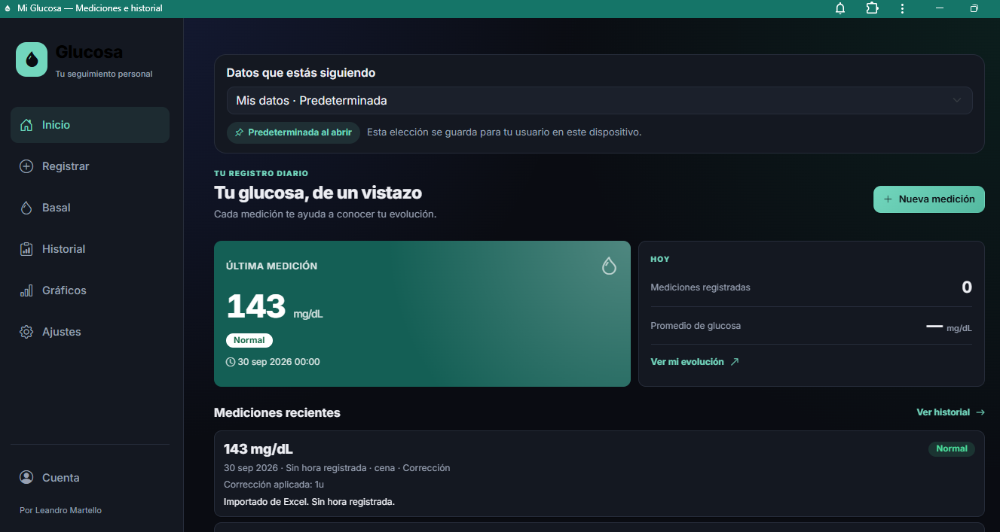
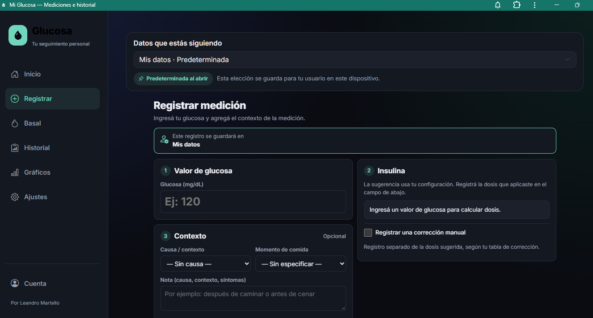
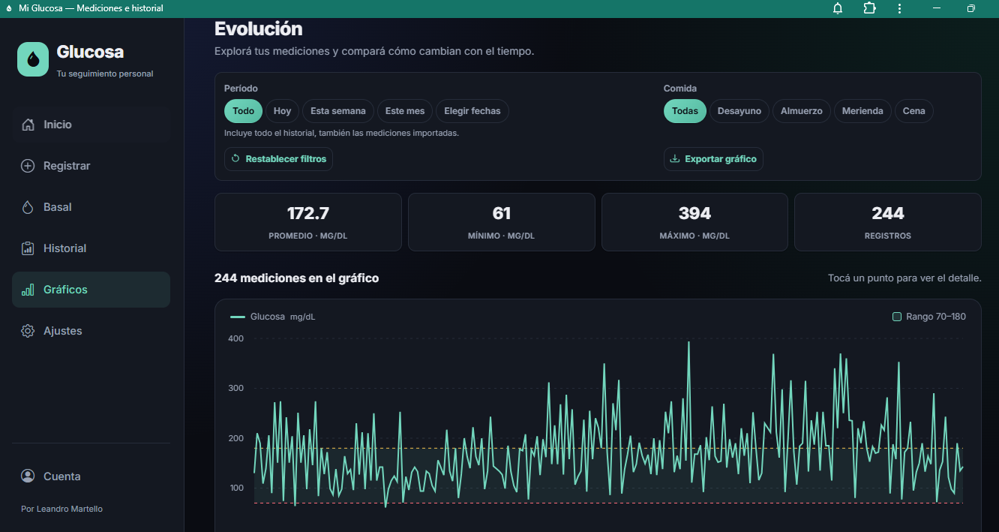
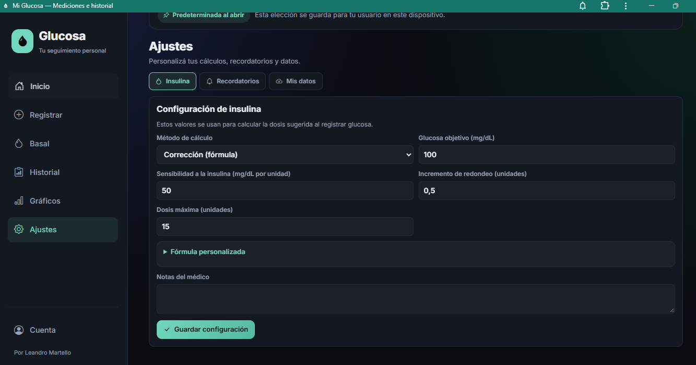

Cada medición, con contexto.
Valor de glucosa, momento de comida y notas para acompañar el registro diario.
Proyecto · Aplicación funcional
Una aplicación para registrar tus niveles de glucosa, sumar el contexto de cada medición y consultar cómo evolucionan con el tiempo.
Aplicación disponible en Netlify · Se abre en otra pestaña

Del registro a la evolución
El proyecto reúne el ingreso de mediciones, el historial y los gráficos en una misma experiencia de seguimiento personal.
Valor de glucosa, momento de comida y notas para acompañar el registro diario.
Última medición y registros recientes desde el inicio, con acceso al historial.
Gráficos con filtros por período y comida, promedio, mínimo y máximo.
Dentro de la aplicación
Capturas de la aplicación compartidas para este proyecto. Seleccioná una imagen para verla en tamaño completo.
El formulario organiza el valor de glucosa, la información de insulina y el contexto de la medición, con espacio para notas personales.

Una vista gráfica permite recorrer las mediciones, elegir fechas y filtrar por comida. El resumen muestra los valores promedio, mínimo y máximo del período.

La pantalla de ajustes reúne la configuración de insulina y accesos a recordatorios y datos personales. Incluye parámetros de cálculo y notas del médico.

Conocé el proyecto en funcionamiento
Accedé al sitio de la aplicación para conocer su experiencia completa.